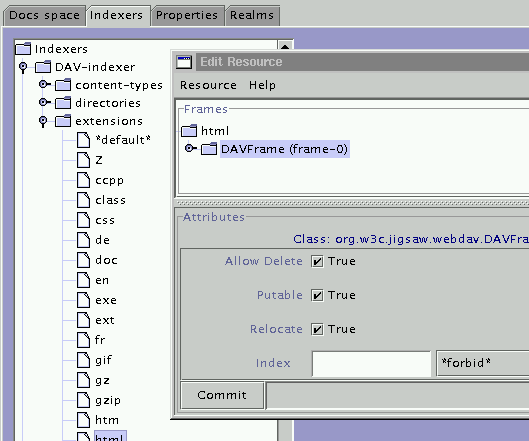

This Page
What is WebDAV?
A WebDAV server
Jigsaw Links
WebDAV Links
RFC 2518
webdav.org
FAQ
DAV in
2 minutes
WebDAV is an XML based protocol, it defines a set of new methods (PROPFIND, PROPPATCH, MKCOL, COPY, MOVE, LOCK, UNLOCK) and a set of new headers (DAV, Depth, If, Destination, ...). A good overview of WebDAV: WebDAV in 2 minutes
The Jigsaw implementation of WebDAV is based on RFC 2518.
Here we describe the process to turn Jigsaw into a WebDAV server.
org.w3c.jigsaw.http.httpd, the one used for
WebDAV is org.w3c.jigsaw.webdav.webdavd. So
edit
[jigsaw-home]Jigsaw/Jigsaw/config/servers.props, you should have something like:
org.w3c.jigsaw.daemon.handlers=http-server|admin-server http-server.org.w3c.jigsaw.daemon.class=org.w3c.jigsaw.webdav.webdavd admin-server.org.w3c.jigsaw.daemon.class=org.w3c.jigsaw.admin.AdminServer
org.w3c.jigsaw.webdav.DAVFrame) and set the
following flags:
true if you want to be able to
update the resource using WebDAV.
true if you want to be
able to delete some resource using WebDAV.

Now set the indexer of the root resource (for example) to DAV-indexer.